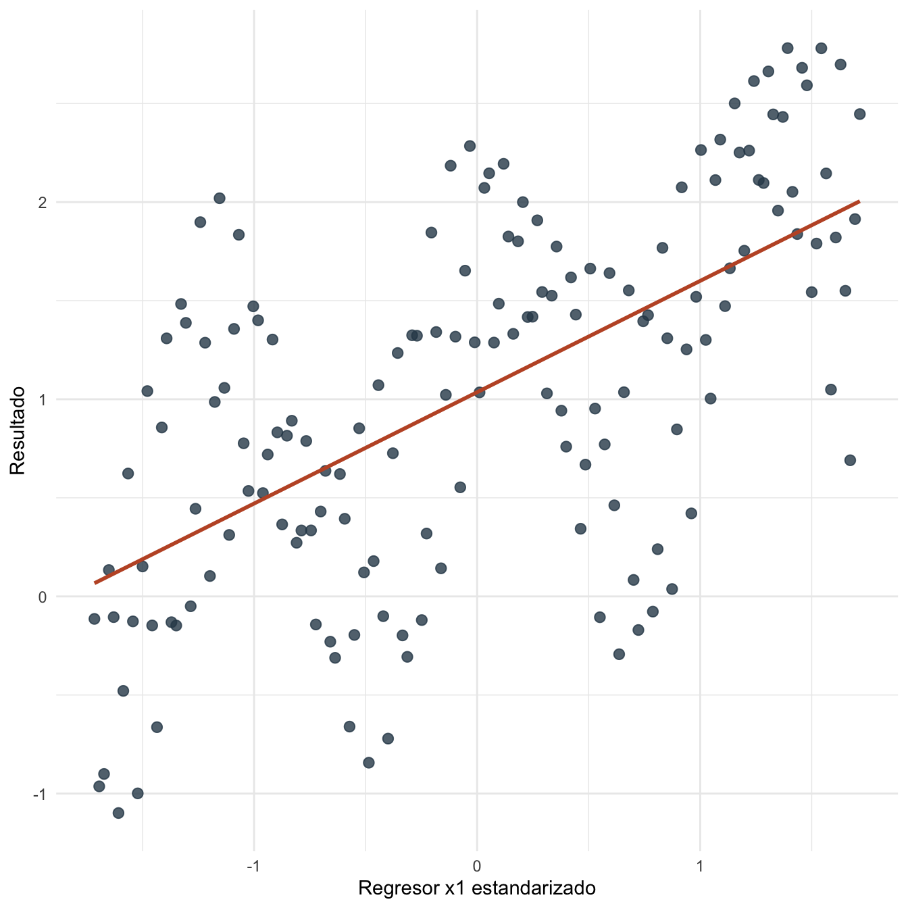
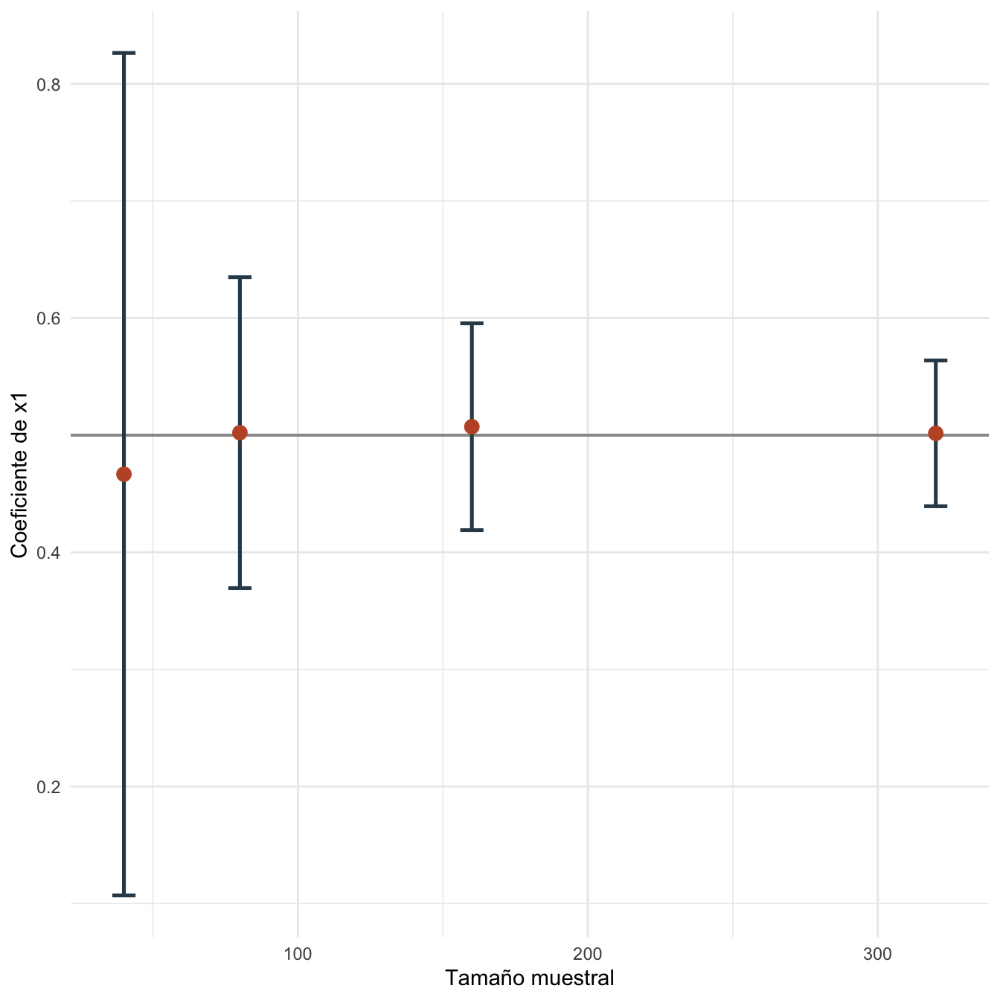

Capítulo 16 Normalidad asintótica e inferencia: práctica
16.1 Objetivos de la práctica
Al finalizar esta práctica podrás:
- Estimar un modelo con una muestra reproducible de tamaño moderado.
- Calcular una prueba tipo \(t\) usando aproximación normal.
- Calcular una prueba de Wald para restricciones múltiples.
- Visualizar cómo cambian coeficientes e intervalos al aumentar \(n\).
- Reproducir el ejercicio en R, Stata y Python.
16.2 Pregunta aplicada
Queremos estudiar una relación lineal entre un resultado educativo y dos regresores construidos de forma reproducible. La pregunta aplicada es:
¿Qué tan cerca está la inferencia basada en una muestra finita de la lógica asintótica que usamos cuando \(n\) crece?
Usaremos datos determinísticos para que R, Stata y Python puedan reproducir la misma base.
16.3 Datos
La función siguiente crea bases de distinto tamaño con la misma regla generadora.
| i | x1 | x2 | y |
|---|---|---|---|
| 1 | -1.716 | 0.994 | -0.114 |
| 2 | -1.694 | 0.975 | -0.963 |
| 3 | -1.673 | 0.945 | -0.900 |
| 4 | -1.651 | 0.903 | 0.134 |
| 5 | -1.630 | 0.850 | -0.105 |
| 6 | -1.608 | 0.786 | -1.099 |
| 7 | -1.586 | 0.712 | -0.479 |
| 8 | -1.565 | 0.630 | 0.623 |
| 9 | -1.543 | 0.540 | -0.127 |
| 10 | -1.522 | 0.444 | -0.999 |

Figura 16.1: Relación entre x1 y el resultado en la base de práctica
16.4 Estimación en R
Estimamos el modelo base y calculamos pruebas usando resultados de R.
| termino | estimacion | error_estandar | t | p_valor |
|---|---|---|---|---|
| (Intercept) | 1.0004 | 0.0447 | 22.3738 | 0 |
| x1 | 0.5072 | 0.0450 | 11.2585 | 0 |
| x2 | -0.6929 | 0.0646 | -10.7251 | 0 |
Ahora repetimos el ejercicio con varios tamaños muestrales para observar cómo se estabilizan la estimación y el intervalo aproximado.
| n | beta_x1 | error_estandar | inferior | superior |
|---|---|---|---|---|
| 40 | 0.4667 | 0.1835 | 0.1070 | 0.8263 |
| 80 | 0.5021 | 0.0677 | 0.3694 | 0.6348 |
| 160 | 0.5072 | 0.0450 | 0.4189 | 0.5955 |
| 320 | 0.5015 | 0.0318 | 0.4393 | 0.5638 |

Figura 16.2: Coeficiente de x1 e intervalos aproximados al aumentar el tamaño muestral
16.5 Interpretación
Para \(H_0:\beta_{x1}=0.50\), el estadístico tipo \(t\) aproximado es 0.160 y el valor \(p\) usando la normal estándar es 0.8733.
Para la hipótesis conjunta \(H_0:\beta_{x1}=0.50\) y \(\beta_{x2}=-0.70\), el estadístico de Wald es 0.034 y su valor \(p\) aproximado es 0.9832.
El gráfico por tamaños muestrales muestra que los intervalos se vuelven más estrechos cuando aumenta \(n\). Esa es la manifestación práctica de la tasa \(\sqrt{n}\): la incertidumbre del estimador cae con el tamaño de la muestra.
La aproximación asintótica no reemplaza el juicio empírico. Si la muestra tiene observaciones extremas, mala especificación o dependencia fuerte, el tamaño muestral por sí solo no garantiza inferencia confiable.
16.6 Estimación en Stata
El mismo ejercicio puede reproducirse en Stata:
clear
set obs 160
gen i = _n
summ i
local media_i = r(mean)
local sd_i = r(sd)
gen x1 = (i - `media_i') / `sd_i'
gen x2 = cos(i / 9)
gen error_base = 0.7 * sin(1.7 * i) + 0.25 * ((mod(i, 4) - 1.5)^2)
summ error_base, meanonly
gen error = error_base - r(mean)
gen y = 1 + 0.50 * x1 - 0.70 * x2 + error
reg y x1 x2
test (x1 = 0.50) (x2 = -0.70)Los resultados esperados son los mismos coeficientes que Stata debe reproducir si usa la misma base y especificación:
| Término | Estimación aproximada | Error estándar aproximado |
|---|---|---|
| Constante | 1.000 | 0.045 |
| x1 | 0.507 | 0.045 |
| x2 | -0.693 | 0.065 |
| \(R^2\) | 0.636 |
16.7 Estimación en Python y Google Colab
Para correr esta práctica en Google Colab, abre un cuaderno nuevo y ejecuta:
Luego reproduce la base y el modelo:
import numpy as np
import pandas as pd
import statsmodels.api as sm
from scipy.stats import chi2, norm
n = 160
i = np.arange(1, n + 1)
x1 = (i - i.mean()) / i.std(ddof=1)
x2 = np.cos(i / 9)
error_base = 0.7 * np.sin(1.7 * i) + 0.25 * ((i % 4) - 1.5) ** 2
error = error_base - error_base.mean()
y = 1 + 0.50 * x1 - 0.70 * x2 + error
datos_asint = pd.DataFrame({"i": i, "x1": x1, "x2": x2, "y": y})
X = sm.add_constant(datos_asint[["x1", "x2"]])
modelo = sm.OLS(datos_asint["y"], X).fit()
print(modelo.summary())
t_x1 = (modelo.params["x1"] - 0.50) / modelo.bse["x1"]
p_norm_x1 = 2 * (1 - norm.cdf(abs(t_x1)))
print({"t_x1": t_x1, "p_normal": p_norm_x1})
R = np.array([[0, 1, 0], [0, 0, 1]])
r = np.array([0.50, -0.70])
b = modelo.params.to_numpy()
V = modelo.cov_params().to_numpy()
W = (R @ b - r).T @ np.linalg.inv(R @ V @ R.T) @ (R @ b - r)
print({"Wald": W, "p_chi2": 1 - chi2.cdf(W, df=2)})Los resultados esperados son los mismos coeficientes que Python debe reproducir si usa la misma base y especificación:
| Término | Estimación aproximada | Error estándar aproximado |
|---|---|---|
| Constante | 1.000 | 0.045 |
| x1 | 0.507 | 0.045 |
| x2 | -0.693 | 0.065 |
| \(R^2\) | 0.636 |
16.8 Comparación R, Stata y Python
Los tres programas estiman el mismo modelo y permiten contrastar restricciones múltiples. R usa directamente matrices con vcov(), Stata usa test, y Python combina cov_params() con álgebra matricial o usa métodos de statsmodels.
| Tarea | R | Stata | Python |
|---|---|---|---|
| Estimar MCO | lm() |
reg |
sm.OLS() |
| Varianza de coeficientes | vcov(modelo) |
matriz interna de reg |
cov_params() |
| Prueba normal aproximada | pnorm() |
salida de reg como aproximación |
scipy.stats.norm |
| Wald conjunto | álgebra con vcov() |
test |
álgebra con cov_params() |
16.9 Errores frecuentes en la práctica
- Creer que una muestra grande corrige cualquier problema. El tamaño ayuda, pero no arregla endogeneidad ni mala especificación.
- Mezclar pruebas exactas y aproximadas sin decirlo. En muestras grandes solemos usar aproximaciones normales o \(\chi^2\).
- Ignorar la escala de los regresores. La interpretación de los coeficientes depende de cómo se midan las variables.
- Duplicar el capítulo de heterocedasticidad. Aquí trabajamos la lógica asintótica; las correcciones robustas se estudian más adelante.
16.10 Ejercicios computacionales
- Cambia el tamaño muestral a 40, 80 y 320. ¿Cómo cambia el error estándar de \(x1\)?
- Evalúa \(H_0:\beta_{x1}=0\) usando la aproximación normal.
- Evalúa una prueba de Wald para \(H_0:\beta_{x1}=0.50\) y \(\beta_{x2}=0\).
- Cambia la regla generadora del error para hacerlo más variable. ¿Qué ocurre con los intervalos?
- Repite el ejercicio en Python y compara los coeficientes con R.